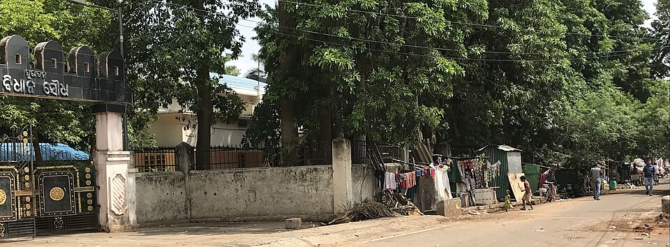
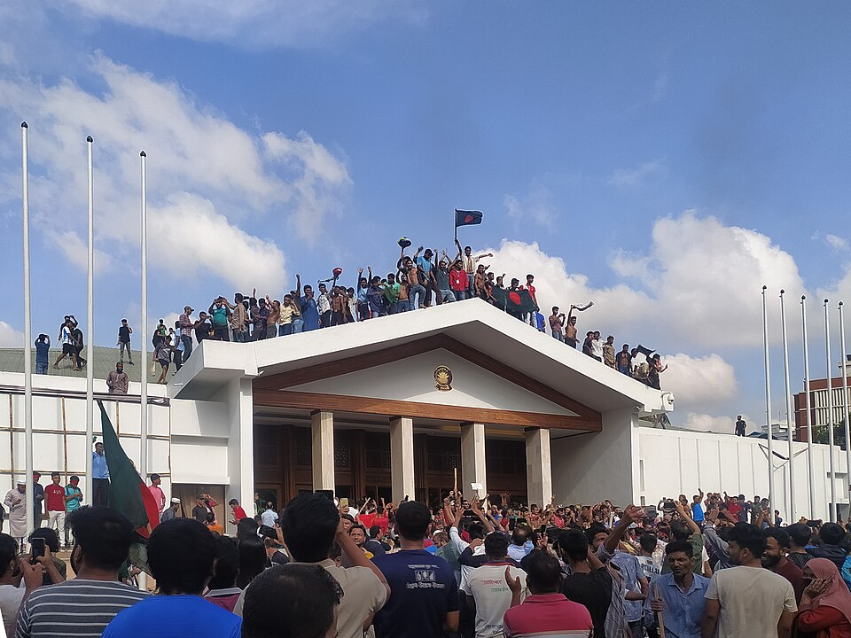
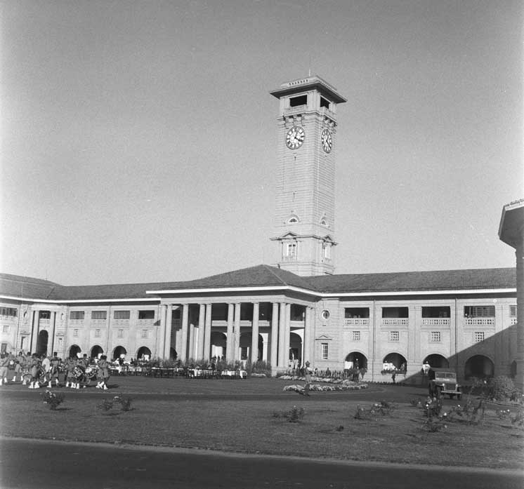
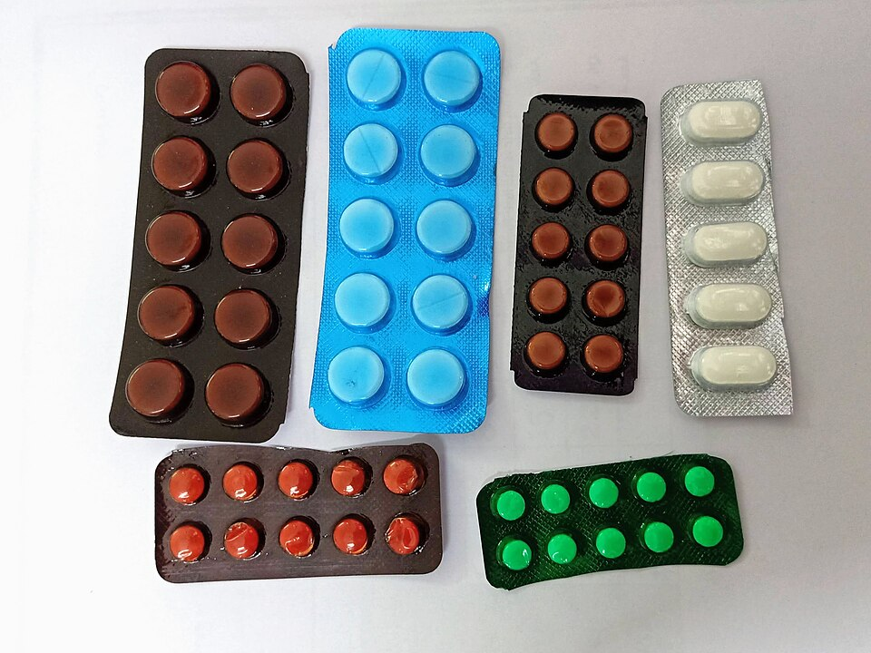

राष्ट्रीयओडिशा की ओर बढ़ा चक्रवात 'अकवान', तीन लाख लोग सुरक्षित स्थानों पर पहुंचाए गए
बंगाल की खाड़ी में उठे चक्रवात 'अकवान' के मद्देनजर ओडिशा के तटीय इलाकों से करीब तीन लाख लोगों को सुरक्षित निकाला गया है। तूफान के शुक्रवार दोपहर पुरी और गोपालपुर के बीच तट से टकराने की संभावना है।
ताज़ा ख़बरें
बांग्लादेश में हिंसा पर पीएम तारिक रहमान का विदेश से साजिश का आरोप
बांग्लादेश के प्रधानमंत्री तारिक रहमान ने पूर्व पीएम शेख हसीना और उनके समर्थकों पर विदेश से हिंसा और आगजनी की साजिश रचने का आरोप लगाया है।
अंतरराष्ट्रीयभारत-जापान 2+2 बैठक: पहली बार भारतीय रेंज में लाइव फायरिंग करेगी जापानी सेना
टोक्यो में हुई चौथी भारत-जापान 2+2 मंत्री स्तरीय बैठक में रक्षा और सामरिक सहयोग बढ़ाने पर सहमति बनी। जापानी सेना भारत में पहली बार लाइव फायरिंग अभ्यास करेगी और दोनों देश रक्षा तकनीक तथा आतंकवाद के खिलाफ मिलकर काम करेंगे।
 राष्ट्रीय
राष्ट्रीययूएनएफपीए रिपोर्ट: आर्थिक तंगी के कारण युवा टाल रहे हैं शादी का फैसला
संयुक्त राष्ट्र जनसंख्या कोष की नई रिपोर्ट के अनुसार, युवा शादी से दूर नहीं भाग रहे हैं, बल्कि आर्थिक असुरक्षा और महंगे मकानों के कारण इस फैसले को टाल रहे हैं।
 खेल
खेलभारत-न्यूजीलैंड टेस्ट: दूसरे दिन का खेल शुरू, पहली पारी में मजबूत स्थिति में कीवी टीम
भारत और न्यूजीलैंड के बीच खेले जा रहे टेस्ट मैच के दूसरे दिन का खेल शुरू हो गया है। न्यूजीलैंड की टीम ने अपनी पहली पारी में पांच विकेट पर 243 से अधिक रन बना लिए हैं।
अंतरराष्ट्रीयभारत में लंबी दूरी की मिसाइलों की टेस्टिंग करेगा जापान, टोक्यो में हुआ समझौता
भारत और जापान के बीच रक्षा सहयोग के तहत जापान की सेना अगले साल से भारत की फायरिंग रेंज में 1000 किमी रेंज वाली मिसाइलों का परीक्षण करेगी।
 राष्ट्रीय
राष्ट्रीययूपी विधानसभा चुनाव 2027: दिसंबर में लखनऊ पहुंचेगा निर्वाचन आयोग, तैयारियों की होगी अंतिम समीक्षा
उत्तर प्रदेश विधानसभा चुनाव 2027 को लेकर निर्वाचन आयोग की तैयारियां तेज हो गई हैं। दिसंबर में पूर्ण आयोग लखनऊ आकर मंडलवार समीक्षा के बाद चुनावी व्यवस्थाओं का जायजा लेगा।
राष्ट्रीयबुलंदशहर में मुठभेड़: डी कंपनी से जुड़ा कुख्यात गैंगस्टर नसीम दुर्रानी ढेर
उत्तर प्रदेश के बुलंदशहर में नोएडा एसटीएफ और दिल्ली पुलिस के संयुक्त अभियान के दौरान हुई मुठभेड़ में कुख्यात गैंगस्टर नसीम दुर्रानी मारा गया। उस पर हत्या और लूट के 25 से अधिक मामले दर्ज थे।
राष्ट्रीयफिक्की के बयान पर जयराम रमेश का पलटवार, पीएम मोदी पर लगाए गंभीर आरोप
प्रधानमंत्री नरेंद्र मोदी के फिक्की सम्मेलन में दिए गए बयान पर कांग्रेस ने तीखा हमला बोला है। पार्टी महासचिव जयराम रमेश ने आरोप लगाया कि पीएम ने रोजगार और अर्थव्यवस्था पर कांग्रेस की पुरानी आलोचनाओं को दोहराया है।
टेकएंथ्रोपिक का नैस्डैक पर डेब्यू, वैल्यूएशन पहुंची 2 ट्रिलियन डॉलर
अमेरिकी एआई कंपनी एंथ्रोपिक ने नैस्डैक पर शानदार शुरुआत करते हुए 2 ट्रिलियन डॉलर का मार्केट वैल्यूएशन हासिल किया है।
राष्ट्रीयतमिलनाडु: डिंडीगुल में मिनी बस खाई में गिरी, तीन की मौत और 16 घायल
तमिलनाडु के डिंडीगुल जिले में यात्रियों से भरी एक मिनी बस के खाई में गिरने से तीन लोगों की मौत हो गई और 16 अन्य घायल हो गए।
राष्ट्रीयदिल्ली के अमन विहार में कार की टक्कर से स्कूली छात्र की मौत, आरोपी ड्राइवर गिरफ्तार
दिल्ली के रोहिणी स्थित अमन विहार इलाके में तेज रफ्तार कार की टक्कर से स्कूल से लौट रहे पांचवीं कक्षा के छात्र की मौत हो गई, जबकि दो अन्य बच्चे घायल हो गए। पुलिस ने आरोपी ड्राइवर को गिरफ्तार कर लिया है।
खेलराइजिंग स्टार्स एशिया कप: नेपाल के खिलाफ आज होगा इंडिया ए का पहला मुकाबला
राइजिंग स्टार्स एशिया कप में तिलक वर्मा की कप्तानी वाली इंडिया ए टीम आज नेपाल के खिलाफ अपने अभियान की शुरुआत करेगी। दोहा में खेले जाने वाले इस वनडे टूर्नामेंट में कई युवा खिलाड़ियों पर नजरें रहेंगी।
 अंतरराष्ट्रीय
अंतरराष्ट्रीयनासा का वायेजर 1 अंतरिक्ष मिशन, पृथ्वी से एक प्रकाश-दिन दूर पहुंचने वाला पहला मानव निर्मित अंतरिक्षयान बना
नासा का वायेजर 1 अंतरिक्षयान पृथ्वी से एक प्रकाश-दिन की दूरी तय करने वाला इतिहास का पहला मानव निर्मित उपकरण बन गया है। यह अंतरिक्ष में अपनी स्थापना के करीब 50 साल पूरे करने के करीब है।
अंतरराष्ट्रीयसिद्धू मूसेवाला हत्याकांड का मास्टरमाइंड गोल्डी बराड़ कनाडा की वांटेड लिस्ट में शामिल
कनाडा ने कुख्यात गैंगस्टर और सिद्धू मूसेवाला हत्याकांड के मास्टरमाइंड गोल्डी बराड़ पर 2.5 लाख केंबियाई डॉलर का इनाम घोषित किया है। उसे देश के शीर्ष 25 वांछित अपराधियों की सूची में रखा गया है।
राष्ट्रीयकांग्रेस ने 81 राष्ट्रीय सचिवों की सूची जारी की, आधे नए चेहरों को मिला मौका
कांग्रेस संगठन में फेरबदल करते हुए 81 एआईसीसी सचिवों की नियुक्ति की गई है. इनमें लगभग आधे नए चेहरे शामिल हैं और सामाजिक संतुलन का विशेष ध्यान रखा गया है.
 व्यापार
व्यापारएआई कंपनी एंथ्रोपिक की शेयर बाजार में मजबूत शुरुआत, वैल्यूएशन दो ट्रिलियन डॉलर पर पहुंची
अमेरिकी एआई कंपनी एंथ्रोपिक के शेयर नैस्डैक पर 34 प्रतिशत से अधिक के प्रीमियम के साथ सूचीबद्ध हुए। इसके साथ ही कंपनी का बाजार मूल्यांकन करीब दो ट्रिलियन डॉलर हो गया है।
अंतरराष्ट्रीयशेनझेन में ट्रंप, शी जिनपिंग और पुतिन की ऐतिहासिक कूटनीतिक बैठक
चीन के शेनझेन शहर में अमेरिकी राष्ट्रपति डोनाल्ड ट्रंप, चीनी राष्ट्रपति शी जिनपिंग और रूसी राष्ट्रपति व्लादिमीर पुतिन के बीच वैश्विक शांति और व्यापार को लेकर अहम बैठक हो रही है.
व्यापारएआई कंपनी एंथ्रोपिक की नैस्डैक पर मजबूत शुरुआत, वैल्यूएशन 1.5 लाख करोड़ डॉलर
कृत्रिम बुद्धिमत्ता क्षेत्र की दिग्गज कंपनी एंथ्रोपिक ने नैस्डैक पर अपने शेयर बाजार सफर की शुरुआत की। कंपनी का आईपीओ 1.5 लाख करोड़ डॉलर के वैल्यूएशन के साथ आया, जो बाजार के अनुमान से अधिक है।
 राष्ट्रीय
राष्ट्रीयआतंकवाद खत्म होने तक पाकिस्तान से बातचीत नामुमकिन: राहुल गांधी
शिकागो विश्वविद्यालय में छात्रों से बातचीत के दौरान राहुल गांधी ने कहा कि आतंकवाद जारी रहने पर पाकिस्तान से चर्चा संभव नहीं है। साथ ही उन्होंने लोकतंत्र बचाने के लिए चुनाव लड़ने की बात दोहराई, जिस पर भाजपा ने कड़ी प्रतिक्रिया दी है।

अंतरराष्ट्रीयबांग्लादेश में राजनीतिक तनाव के बीच पीएम तारिक रहमान की दलों से एकजुट होने की अपील
बांग्लादेश की पूर्व प्रधानमंत्री शेख हसीना के दिसंबर में संभावित स्वदेश लौटने की घोषणा के बाद देश में बढ़े राजनीतिक तनाव और हिंसा के बीच, प्रधानमंत्री तारिक रहमान ने सभी लोकतांत्रिक राजनीतिक दलों से एकजुट होने की अपील की है।
अंतरराष्ट्रीयसोनिया गांधी ने मानवाधिकार कार्यकर्ता ग्रासा माशेल को इंदिरा गांधी शांति पुरस्कार प्रदान किया
कांग्रेस संसदीय दल की अध्यक्ष सोनिया गांधी ने मोजाम्बिक की मानवाधिकार कार्यकर्ता ग्रासा माशेल को वर्ष 2025 के 'इंदिरा गांधी शांति, निरस्त्रीकरण और विकास पुरस्कार' से सम्मानित किया।
राष्ट्रीयएबीपी नेटवर्क का 'द सदर्न राइजिंग 2026', हैदराबाद में 20 नवंबर को होगा आयोजन
एबीपी नेटवर्क के शिखर सम्मेलन 'द सदर्न राइजिंग' का चौथा संस्करण 20 नवंबर 2026 को हैदराबाद में आयोजित किया जाएगा। इसमें दक्षिण भारत के राजनीतिक, कारोबारी और सांस्कृतिक जगत के दिग्गज शामिल होंगे।
 व्यापार
व्यापारटैक्स में छूट के बाद भी रोजगार और वेतन न बढ़ाने पर पीएम मोदी ने कॉर्पोरेट्स को घेरा
प्रधानमंत्री नरेंद्र मोदी ने फिक्की के कार्यक्रम में कॉर्पोरेट जगत पर निशाना साधते हुए कहा कि टैक्स में राहत मिलने के बावजूद कंपनियों ने कर्मचारियों का वेतन और रोजगार नहीं बढ़ाया.
राष्ट्रीयनिशांत कुमार को पीछे धकेलने के मामले में SSG ने मानी मानवीय भूल
बिहार में नीतीश सेतु के निरीक्षण के दौरान मुख्यमंत्री के सुरक्षाकर्मी द्वारा निशांत कुमार को पीछे धकेलने का वीडियो वायरल होने के बाद, विशेष सुरक्षा दल (SSG) ने इसे मानवीय भूल बताया है।
अंतरराष्ट्रीयभारत, अमेरिका, जापान और ऑस्ट्रेलिया 2027 में करेंगे पहला संयुक्त क्वाड समुद्री अभ्यास
भारत, अमेरिका, जापान और ऑस्ट्रेलिया ने मनीला में आयोजित क्वाड शिखर सम्मेलन में 2027 में पहले संयुक्त समुद्री सैन्य अभ्यास की घोषणा की है, जिससे यह समूह अब केवल संवाद तक सीमित नहीं रहा।
राष्ट्रीयरोहतक में दीपेंद्र हुड्डा के PSO की गोली लगने से मौत, जांच में जुटी पुलिस
कांग्रेस सांसद दीपेंद्र सिंह हुड्डा के पर्सनल सिक्योरिटी ऑफिसर और हरियाणा पुलिस के एएसआई प्रदीप का रोहतक में उनके पैतृक आवास पर गोली लगने से निधन हो गया। पुलिस मामले की जांच कर रही है।
 खेल
खेलयुजवेंद्र चहल ने टी20 क्रिकेट में पूरे किए 400 विकेट, ऐसा करने वाले पहले भारतीय गेंदबाज बने
भारत के लेग स्पिनर युजवेंद्र चहल ने टी20 क्रिकेट में 400 विकेट का आंकड़ा पार कर लिया है। वह इस मुकाम पर पहुंचने वाले पहले भारतीय गेंदबाज बन गए हैं।
 अंतरराष्ट्रीय
अंतरराष्ट्रीयबांग्लादेश में भड़की हिंसा, ढाका में देसी बम धमाके और तोड़फोड़
बांग्लादेश में अवामी लीग के बंद के दौरान व्यापक हिंसा भड़की है। राजधानी ढाका में देसी बम फटे और कई जगहों पर आगजनी व तोड़फोड़ की खबरें हैं, जिससे सुरक्षा हालात तनावपूर्ण हो गए हैं।

राष्ट्रीयबिहार में सुरक्षाकर्मियों द्वारा रोके जाने पर JDU की उच्चस्तरीय जांच की मांग
वैशाली जिले में निरीक्षण के दौरान स्वास्थ्य मंत्री निशांत कुमार को मुख्यमंत्री सम्राट चौधरी के पास जाने से सुरक्षाकर्मियों ने रोक दिया। इस घटना के बाद JDU ने उच्चस्तरीय जांच की मांग की है।
अंतरराष्ट्रीयप्यू रिसर्च सेंटर की नई रिपोर्ट में 2070 तक वैश्विक धार्मिक आबादी के बदलावों का अनुमान
प्यू रिसर्च सेंटर और पोलैंड के इंस्टीट्यूट फॉर द स्टडी ऑफ रिलिजन की नई रिपोर्ट के अनुसार, 2070 तक मुसलमानों की आबादी सबसे तेज़ी से बढ़ेगी और भारत हिंदू बहुल देश बना रहेगा।
 राष्ट्रीय
राष्ट्रीयवर्ष 2027 के केंद्रीय अवकाशों पर भ्रामक दावा खारिज, DoPT ने जारी की सूची
पीआईबी फैक्ट चेक ने वर्ष 2027 के दौरान दिल्ली में केंद्रीय सरकारी कार्यालयों में छुट्टियों को लेकर फैल रहे दावे को खारिज किया है। कार्मिक मंत्रालय के अनुसार, कुल 17 राजपत्रित अवकाश तय किए गए हैं।
राष्ट्रीयप्रधानमंत्री मोदी ने कहा, नशामुक्त भारत के लिए दिखावे की नहीं, सामूहिक प्रयासों की जरूरत
प्रधानमंत्री नरेंद्र मोदी ने दिल्ली में एक सम्मेलन को संबोधित करते हुए कहा कि नशामुक्त भारत के लिए केवल दिखावे का काम नहीं चलेगा। उन्होंने आध्यात्मिक संगठनों, स्कूलों और आम लोगों की भागीदारी पर जोर दिया।
 खेल
खेलएमएस धोनी के आईपीएल मेंटॉर बनने पर वीरेंद्र सहवाग का बड़ा बयान
पूर्व भारतीय क्रिकेटर वीरेंद्र सहवाग का कहना है कि आईपीएल 2027 में चेन्नई सुपर किंग्स के मेंटॉर की भूमिका संभालने के बाद एमएस धोनी पर टीम के प्रदर्शन और संयोजन को लेकर अधिक दबाव रहेगा।
अंतरराष्ट्रीयधार्मिक सवालों और फ़तवों के लिए एआई के इस्तेमाल पर छिड़ी बहस
इस्लामी सवालों के जवाब देने वाले 'क़ाफ़' एआई असिस्टेंट के लॉन्च के बाद दुनिया भर में धार्मिक मामलों में तकनीक के इस्तेमाल को लेकर बहस शुरू हो गई है।
अंतरराष्ट्रीय2035 तक मुस्लिम आबादी बन सकती है दुनिया का सबसे बड़ा धार्मिक समूह: रिपोर्ट
प्यू रिसर्च सेंटर की रिपोर्ट के अनुसार, उच्च प्रजनन दर और युवा आबादी के कारण 2035 तक मुस्लिम आबादी दुनिया का सबसे बड़ा धार्मिक समूह बन सकती है.
अंतरराष्ट्रीयमैकडॉनल्ड्स पूर्व कर्मचारी का आरोप, युवा कर्मियों के सुरक्षा तरीके बदले कंपनी
मैकडॉनल्ड्स की पूर्व कर्मचारी होप ने कंपनी से कम उम्र के कर्मियों के सुरक्षा तरीकों को बदलने की अपील की है। लंदन की एक अदालत ने कंपनी के खिलाफ भेदभाव के सैकड़ों मामलों में कानूनी कार्रवाई आगे बढ़ाने की अनुमति दी है।
 राष्ट्रीय
राष्ट्रीयकश्मीर अब स्थानीय आतंकियों से पूरी तरह मुक्त है: गृह मंत्री अमित शाह
केंद्रीय गृह मंत्री अमित शाह ने नई दिल्ली में आतंकवाद विरोधी सम्मेलन को संबोधित करते हुए कहा कि देश से आतंकवाद और संगठित अपराध को खत्म किया जाएगा।
राष्ट्रीयमदुरई के तनिष्क शोरूम में बड़ी चोरी, टैटू और यूट्यूब चैनल से पकड़ा गया आरोपी
मदुरई के एक ज्वेलरी शोरूम से करोड़ों के सोने-हीरे के जेवर चुराने वाले आरोपी को पुलिस ने टैटू और सोशल मीडिया की मदद से गिरफ्तार कर लिया है।

राष्ट्रीयमध्य प्रदेश: बीजेपी विधायक सचिन बिरला का खनन अनुमति को लेकर पत्र वायरल
मध्य प्रदेश के खरगोन जिले से भाजपा विधायक सचिन बिरला का एक पत्र सोशल मीडिया पर वायरल हो रहा है, जिसमें उन्होंने बिना उनकी अनुशंसा के खनन से जुड़ी अनुमति न देने की मांग की है।